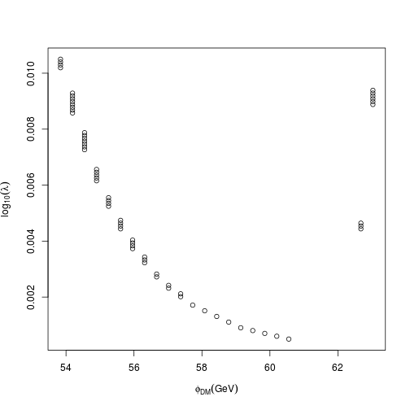

Tools for Particle Dark Matter Observables calculations
Feynrules & MicrOmegas
Vannia Gonzalez
University of California, riverside
Outline
Motivation, Particle Dark Matter and checklist (Session 1)
Example of "favorite" model : Scalar Dark Matter Model (Session 1)
Implementation on Feynrules (Session 1-3)
-Overview
-Implementation
MicrOmegas Observables (Sessions 3-4)
-Exporting your model
-DM observables
-Editing and executing main file
-Calchep
Homeworks
First session: Download/install mathematica 9 or 11, feynrules and micrOmegas
Second session: Implement model of choice with Feynrules, or think about what you would need to add for a new gauge symmetry
Third session: Export model using mathematica session to micrOmegas/calchep
Fourth session: calculate a simple graph plotting two model parameters vs the relic abundance within 3 sigma
Introduction: Particle Dark Matter
FACT: We have observed dark matter interact with ordinary matter.
ONLY through the gravitational force
ONLY at large scales
- Movement of stars orbiting galaxies (rotational curves),
- Gravitational lensing observations,
- Average velocities of group of galaxies
Then why assume it will interact in any other way?
Does it couple in any way to the Standard Model?
Huge effort at looking for a DM particle and non-gravitational interaction with basic requirements:
- Does not emit or absorb EM radiation
- Stable & long lived
- Weak enough to meet the constraints of direct and indirect detection experiments
- Strong enough to generate the relic abundance inferred from measurements of the CMB
Basic checklist for a particle dark matter model

\(\checkmark\) Satisfies Relic abundance
The density at the time of freeze-out (since its abundance remains constant)
MEASURED by Planck (15') \(\,\Omega_{CDM}h^2=0.1198 \pm 0.0015\), inferred from the CMB.
Is this model dependent? Yes, on \(\Lambda CDM\) (Large scales), with a fixed number of parameters (usually 6 or 7), the best-fit parameters are determined from the peak of the N-dimensional likelihood surface of the CMB anisotropies.
Annihilation cross section of a WIMP
If the particle was in local thermal equilibrium (interacting sufficiently) before decoupling (when annihilation rate drops below expansion rate) and is massive, hence non-relativistic and with a number density in equilibrium given by the Maxwell-Boltzmann approximation, then it is a so-called WIMP and the cross section is estimated to be
\[\Omega_{CDM}h^2\simeq\frac{ 3\times 10^{-26}cm^3s^{-1}}{<\sigma v>}\]
\(\checkmark\) Direct detection
- CONSTRAINED by Lux (XENON, Panda, DarkSide,... ).

\(\checkmark\) Indirect detection
Detection of photons, charged fermions or neutrino final states from the annihilation
of DM into SM particles in a dense region of the Universe (galactic centers, dwarf galaxies, galactic halos, galaxy clusters or other unresolved point-sources and also the cores of the Sun
and Earth after DM is trapped on their gravitational well)
CONSTRAINED by FermiLAT, H.E.S.S., MAGIC, HAWC, IceCube, SuperKamiokande...
Note that FermiLAT has a stringent constrain over the cross section annihilation (which will determine relic abundance ), but big enough uncertainty..

?\(\checkmark\) Colliders
Look for monojet: events containing a jet and an imbalance in transverse momentum
Plausibility depends on type of DM and mediators...
\[p\bar{p}(pp)\to \chi\chi + X\]

** Beyond the scope of this talk
Example: Scalar singlet dark matter
Scalar singlet dark matter
Now let's talk about a specific model to start filling the basic checklist (no collider search for now)
Scalar Dark Matter model ingredients: Neutral, no new gauge symmetry, DM candidate if it does not decay $ m_{SDM}<m_H $. (Ref. Cline et al)
Potential \[ V_S=\frac{1}{2} \mu_S^2 S^2 +\frac{1}{2}\lambda_{SH}S^2|H|^2 \]
Mass \[m_S=\sqrt{\mu_S^2+\frac{1}{2}\lambda_{SH}v^2}\]
Model implementation: Feynrules
How to implement a model and compute its Feynman rules using Feynrules (a Mathematica package)
Aim of Feynrules (Ref. talks by C. Duhr & S. Iwamoto ):
A code that automatizes all the steps necessary to input the symmetries, particles, and parameters of a model, and allows to implement the model into Matrix element generators starting directly from the Lagrangian.
Workflow:
- Define the symmetries, particles and parameters.
- Enter the Lagrangian.
- Let the code compute the Feynman rules.
- Output all the information in the format required by your favorite MC code (CalcHep / CompHep, FeynArts / FormCalc, MadGraph, Sherpa, Whizard / Omega)
The only requirements on the Lagrangian are:
- All indices need to be contracted (Lorentz and gauge invariance).
- CPT invariance (~ ‘normal’ particle/anti-particle relation).
- Locality.
- Supported field types: spin 0, 1/2, 1, 3/2, 2 & ghosts.
- Does not support four fermion interaction
Getting started
- Download feynrules from feynrules in any directory of your choice
> cd ~/codes
> tar zxvf ~/Downloads/feynrules-current.tar.gz
- Choose your favorite model: (recall the model we chose)
Scalar singlet dark matter.
- We need to implement into a FeynRules model file
- Start with the Standard Model file (included with Feynrules)
- One scalar neutral particle
- The two new parameters \(\mu_S\) and \(\lambda_{SH}\)
- In a second step, we need to implement the Lagrangian into Mathematica.
- A model file is simply a text file (with extension .fr).
- The syntax is Mathematica.
General structure:
-Preamble (Author info, model info, index definitions, ... ) -Particle Declarations (Particle class definitions, spins, quantum numbers, ...) -Parameter Declarations (Numerical Values, ...) -Lagrangian
Homework Session 1
- Open "Models/SM/SM.fr"" from the feynrules directory.
You can see that the input file has
- 3 gauge symmetries,
- 5 indices (labels of color, generation, etc.),
- 26 particle classes,
- unphysical fields (gauge eigenstates)
- physical fields (mass eigenstates)
- 29 parameters,
- Interactions (embedded in a Lagrangian),
- etc.
You have to write all of them if you want to implement your model. Append to the default SM file!!
The file starts with an Information block (Preamble).
M$ModelName = "Simplest Scalar DM";
M$Information = {
Authors -> {"A. Bernal", "J. Barranco", "V. Gonzalez"},
Date -> "04.06.2017",
Version -> "1.0.0",
Date -> "28. 09. 2016",
Institutions -> {"University of Guanajuato"},
Emails -> {"jbarranco@fisica.ugto.mx"}
};
FeynmanGauge = True;
M$vevs = { {Phi[2],vev} };
If FeynmanGauge=False then you are in the unitary gauge i.e. \(\phi^T=(0,(v+H)/\sqrt{2})\)
Symmetries and indices
To gauge the theory you need in general:
- Gauge boson (particle in fr) and gauge coupling (parameter in fr)
- Structure constants.
- Representation matrices.
- An associated index for non singlet representations
M$GaugeGroups = {
U1Y == {
Abelian -> True,
CouplingConstant -> g1,
GaugeBoson -> B,
Charge -> Y
},
SU2L == {
Abelian -> False,
CouplingConstant -> gw,
GaugeBoson -> Wi,
StructureConstant -> Eps,
Representations -> {Ta,SU2D},
Definitions -> {Ta[a_,b_,c_]->PauliSigma[a,b,c]/2, FSU2L[i_,j_,k_]:> I Eps[i,j,k]}
},
SU3C == {
Abelian -> False,
CouplingConstant -> gs,
GaugeBoson -> G,
StructureConstant -> f,
Representations -> {T,Colour},
SymmetricTensor -> dSUN
}
};
(* ************************** *)
(* ***** Indices ***** *)
(* ************************** *)
IndexRange[Index[SU2W ]] = Unfold[Range[3]];
IndexRange[Index[SU2D ]] = Unfold[Range[2]];
IndexRange[Index[Gluon ]] = NoUnfold[Range[8]];
IndexRange[Index[Colour ]] = NoUnfold[Range[3]];
IndexRange[Index[Generation]] = Range[3];
IndexStyle[SU2W, j];
IndexStyle[SU2D, k];
IndexStyle[Gluon, a];
IndexStyle[Colour, m];
IndexStyle[Generation, f];
Particles
Particles are defined as ‘classes’, grouping together particles with similar quantum numbers, but different masses (~multiplet).
SSDM: Only one physical neutral singlet scalar. NOTE: MicrOmegas identifies DM particles with a left "~" from its name.
(* ************************** *)
(* **** Particle classes **** *)
(* ************************** *)
M$ClassesDescription = {
(* Gauge bosons: physical vector fields *)
V[1] == {
ClassName -> A,
SelfConjugate -> True,
Mass -> 0,
Width -> 0,
ParticleName -> "a",
PDG -> 22,
PropagatorLabel -> "a",
PropagatorType -> W,
PropagatorArrow -> None,
FullName -> "Photon"
},
V[2] == {
ClassName -> Z,
SelfConjugate -> True,
Mass -> {MZ, 91.1876},
Width -> {WZ, 2.4952},
ParticleName -> "Z",
PDG -> 23,
PropagatorLabel -> "Z",
PropagatorType -> Sine,
PropagatorArrow -> None,
FullName -> "Z"
},
V[3] == {
ClassName -> W,
SelfConjugate -> False,
Mass -> {MW, Internal},
Width -> {WW, 2.085},
ParticleName -> "W+",
AntiParticleName -> "W-",
QuantumNumbers -> {Q -> 1},
PDG -> 24,
PropagatorLabel -> "W",
PropagatorType -> Sine,
PropagatorArrow -> Forward,
FullName -> "W"
},
V[4] == {
ClassName -> G,
SelfConjugate -> True,
Indices -> {Index[Gluon]},
Mass -> 0,
Width -> 0,
ParticleName -> "g",
PDG -> 21,
PropagatorLabel -> "G",
PropagatorType -> C,
PropagatorArrow -> None,
FullName -> "G"
},
(* Fermions: physical fields *)
F[1] == {
ClassName -> vl,
ClassMembers -> {ve,vm,vt},
Indices -> {Index[Generation]},
FlavorIndex -> Generation,
SelfConjugate -> False,
Mass -> 0,
Width -> 0,
QuantumNumbers -> {LeptonNumber -> 1},
PropagatorLabel -> {"v", "ve", "vm", "vt"} ,
PropagatorType -> S,
PropagatorArrow -> Forward,
PDG -> {12,14,16},
ParticleName -> {"ve","vm","vt"},
AntiParticleName -> {"ve~","vm~","vt~"},
FullName -> {"Electron-neutrino", "Mu-neutrino", "Tau-neutrino"}
},
F[2] == {
ClassName -> l,
ClassMembers -> {e, mu, ta},
Indices -> {Index[Generation]},
FlavorIndex -> Generation,
SelfConjugate -> False,
Mass -> {Ml, {Me,5.11*^-4}, {MMU,0.10566}, {MTA,1.777}},
Width -> 0,
QuantumNumbers -> {Q -> -1, LeptonNumber -> 1},
PropagatorLabel -> {"l", "e", "mu", "ta"},
PropagatorType -> Straight,
PropagatorArrow -> Forward,
PDG -> {11, 13, 15},
ParticleName -> {"e-", "mu-", "ta-"},
AntiParticleName -> {"e+", "mu+", "ta+"},
FullName -> {"Electron", "Muon", "Tau"}
},
F[3] == {
ClassName -> uq,
ClassMembers -> {u, c, t},
Indices -> {Index[Generation], Index[Colour]},
FlavorIndex -> Generation,
SelfConjugate -> False,
Mass -> {Mu, {MU, 2.55*^-3}, {MC,1.27}, {MT,172}},
Width -> {0, 0, {WT,1.50833649}},
QuantumNumbers -> {Q -> 2/3},
PropagatorLabel -> {"uq", "u", "c", "t"},
PropagatorType -> Straight,
PropagatorArrow -> Forward,
PDG -> {2, 4, 6},
ParticleName -> {"u", "c", "t" },
AntiParticleName -> {"u~", "c~", "t~"},
FullName -> {"u-quark", "c-quark", "t-quark"}
},
F[4] == {
ClassName -> dq,
ClassMembers -> {d, s, b},
Indices -> {Index[Generation], Index[Colour]},
FlavorIndex -> Generation,
SelfConjugate -> False,
Mass -> {Md, {MD,5.04*^-3}, {MS,0.101}, {MB,4.7}},
Width -> 0,
QuantumNumbers -> {Q -> -1/3},
PropagatorLabel -> {"dq", "d", "s", "b"},
PropagatorType -> Straight,
PropagatorArrow -> Forward,
PDG -> {1,3,5},
ParticleName -> {"d", "s", "b" },
AntiParticleName -> {"d~", "s~", "b~"},
FullName -> {"d-quark", "s-quark", "b-quark"}
},
(* Fermions: unphysical fields *)
F[11] == {
ClassName -> LL,
Unphysical -> True,
Indices -> {Index[SU2D], Index[Generation]},
FlavorIndex -> SU2D,
SelfConjugate -> False,
QuantumNumbers -> {Y -> -1/2},
Definitions -> { LL[sp1_,1,ff_] :> Module[{sp2}, ProjM[sp1,sp2] vl[sp2,ff]], LL[sp1_,2,ff_] :> Module[{sp2}, ProjM[sp1,sp2] l[sp2,ff]] }
},
F[12] == {
ClassName -> lR,
Unphysical -> True,
Indices -> {Index[Generation]},
FlavorIndex -> Generation,
SelfConjugate -> False,
QuantumNumbers -> {Y -> -1},
Definitions -> { lR[sp1_,ff_] :> Module[{sp2}, ProjP[sp1,sp2] l[sp2,ff]] }
},
F[13] == {
ClassName -> QL,
Unphysical -> True,
Indices -> {Index[SU2D], Index[Generation], Index[Colour]},
FlavorIndex -> SU2D,
SelfConjugate -> False,
QuantumNumbers -> {Y -> 1/6},
Definitions -> {
QL[sp1_,1,ff_,cc_] :> Module[{sp2}, ProjM[sp1,sp2] uq[sp2,ff,cc]],
QL[sp1_,2,ff_,cc_] :> Module[{sp2,ff2}, CKM[ff,ff2] ProjM[sp1,sp2] dq[sp2,ff2,cc]] }
},
F[14] == {
ClassName -> uR,
Unphysical -> True,
Indices -> {Index[Generation], Index[Colour]},
FlavorIndex -> Generation,
SelfConjugate -> False,
QuantumNumbers -> {Y -> 2/3},
Definitions -> { uR[sp1_,ff_,cc_] :> Module[{sp2}, ProjP[sp1,sp2] uq[sp2,ff,cc]] }
},
F[15] == {
ClassName -> dR,
Unphysical -> True,
Indices -> {Index[Generation], Index[Colour]},
FlavorIndex -> Generation,
SelfConjugate -> False,
QuantumNumbers -> {Y -> -1/3},
Definitions -> { dR[sp1_,ff_,cc_] :> Module[{sp2}, ProjP[sp1,sp2] dq[sp2,ff,cc]] }
},
(* Higgs: physical scalars *)
S[1] == {
ClassName -> H,
SelfConjugate -> True,
Mass -> {MH,125},
Width -> {WH,0.00407},
PropagatorLabel -> "H",
PropagatorType -> D,
PropagatorArrow -> None,
PDG -> 25,
ParticleName -> "H",
FullName -> "H"
},
(* Higgs: physical scalars *)
S[2] == {
ClassName -> G0,
SelfConjugate -> True,
Goldstone -> Z,
Mass -> {MZ, 91.1876},
Width -> {WZ, 2.4952},
PropagatorLabel -> "Go",
PropagatorType -> D,
PropagatorArrow -> None,
PDG -> 250,
ParticleName -> "G0",
FullName -> "G0"
},
S[3] == {
ClassName -> GP,
SelfConjugate -> False,
Goldstone -> W,
Mass -> {MW, Internal},
QuantumNumbers -> {Q -> 1},
Width -> {WW, 2.085},
PropagatorLabel -> "GP",
PropagatorType -> D,
PropagatorArrow -> None,
PDG -> 251,
ParticleName -> "G+",
AntiParticleName -> "G-",
FullName -> "GP"
},
(* Higgs: unphysical scalars *)
S[11] == {
ClassName -> Phi,
Unphysical -> True,
Indices -> {Index[SU2D]},
FlavorIndex -> SU2D,
SelfConjugate -> False,
QuantumNumbers -> {Y -> 1/2},
Definitions -> { Phi[1] -> -I GP, Phi[2] -> (vev + H + I G0)/Sqrt[2] }
},
(* DM scalar *)
S[12] == {
ClassName -> phidm,
SelfConjugate -> True,
Mass -> {mdm,Internal},
Width -> {wdm, 0},
ParticleName -> "~phidm"
(*Include dark number*)
}
};
Note that accidental symmetries like lepton number have to be specified.
For a dark matter model, dark particles would exhibit a discrete symmetry under which the SM particles transfrom trivially. Sometimes necessary to include
There are many more (optional) properties for particle classes:
- Width : Total width of the particle. 0 if stable.
- QuantumNumbers : U(1) charges carried by the field.
- PDG code of the particle (if existent).
- ParticleName / AntiParticleName : A string, by which the particle will be referred to in the MC code.
- Unphysical : If True , then the particle is tagged as not a mass eigenstate, and will not be output to the MC code.
Parameters
For our model we will need to define two external parameters : \(\mu_S,\lambda_{SH}\) and one internal \(m_{DM}\) (given in terms of the other two)
Only external parameters can be modified in the montecarlo codes, i.e. micrOmegas
(* ************************** *)
(* ***** Parameters ***** *)
(* ************************** *)
M$Parameters = {
(* External parameters *)
Gf == {
ParameterType -> External,
BlockName -> SMINPUTS,
OrderBlock -> 2,
Value -> 1.16637*^-5,
InteractionOrder -> {QED,2},
TeX -> Subscript[G,f],
Description -> "Fermi constant"
},
ymc == {
ParameterType -> External,
BlockName -> YUKAWA,
OrderBlock -> 4,
Value -> 1.27,
Description -> "Charm Yukawa mass"
},
ymb == {
ParameterType -> External,
BlockName -> YUKAWA,
OrderBlock -> 5,
Value -> 4.7,
Description -> "Bottom Yukawa mass"
},
(* ........ *)
cabi == {
ParameterType -> External,
BlockName -> CKMBLOCK,
OrderBlock -> 1,
Value -> 0.227736,
TeX -> Subscript[\[Theta], c],
Description -> "Cabibbo angle"
},
(* Internal Parameters *)
MW == {
ParameterType -> Internal,
Value -> Sqrt[MZ^2/2+Sqrt[MZ^4/4-Pi/Sqrt[2]*aEW/Gf*MZ^2]],
TeX -> Subscript[M,W],
Description -> "W mass"
(* ................... *)
vev == {
ParameterType -> Internal,
Value -> 2*MW*sw/ee,
InteractionOrder -> {QED,-1},
Description -> "Higgs vacuum expectation value"
},
lam == {
ParameterType -> Internal,
Value -> MH^2/(2*vev^2),
InteractionOrder -> {QED, 2},
Description -> "Higgs quartic coupling"
},
muH == {
ParameterType -> Internal,
Value -> Sqrt[vev^2 lam],
TeX -> \[Mu],
Description -> "Coefficient of the quadratic piece of the Higgs potential"
},
yl == {
ParameterType -> Internal,
Indices -> {Index[Generation], Index[Generation]},
Definitions -> {yl[i_?NumericQ, j_?NumericQ] :> 0 /; (i =!= j)},
Value -> {yl[1,1] -> Sqrt[2] yme / vev, yl[2,2] -> Sqrt[2] ymm / vev, yl[3,3] -> Sqrt[2] ymtau / vev},
InteractionOrder -> {QED, 1},
ParameterName -> {yl[1,1] -> ye, yl[2,2] -> ym, yl[3,3] -> ytau},
TeX -> Superscript[y, l],
Description -> "Lepton Yukawa couplings"
},
yu == {
ParameterType -> Internal,
Indices -> {Index[Generation], Index[Generation]},
Definitions -> {yu[i_?NumericQ, j_?NumericQ] :> 0 /; (i =!= j)},
Value -> {yu[1,1] -> Sqrt[2] ymup/vev, yu[2,2] -> Sqrt[2] ymc/vev, yu[3,3] -> Sqrt[2] ymt/vev},
InteractionOrder -> {QED, 1},
ParameterName -> {yu[1,1] -> yup, yu[2,2] -> yc, yu[3,3] -> yt},
TeX -> Superscript[y, u],
Description -> "Up-type Yukawa couplings"
},
yd == {
ParameterType -> Internal,
Indices -> {Index[Generation], Index[Generation]},
Definitions -> {yd[i_?NumericQ, j_?NumericQ] :> 0 /; (i =!= j)},
Value -> {yd[1,1] -> Sqrt[2] ymdo/vev, yd[2,2] -> Sqrt[2] yms/vev, yd[3,3] -> Sqrt[2] ymb/vev},
InteractionOrder -> {QED, 1},
ParameterName -> {yd[1,1] -> ydo, yd[2,2] -> ys, yd[3,3] -> yb},
TeX -> Superscript[y, d],
Description -> "Down-type Yukawa couplings"
},
(* N. B. : only Cabibbo mixing! *)
CKM == {
ParameterType -> Internal,
Indices -> {Index[Generation], Index[Generation]},
Unitary -> True,
Value -> {CKM[1,1] -> Cos[cabi], CKM[1,2] -> Sin[cabi], CKM[1,3] -> 0,
CKM[2,1] -> -Sin[cabi], CKM[2,2] -> Cos[cabi], CKM[2,3] -> 0,
CKM[3,1] -> 0, CKM[3,2] -> 0, CKM[3,3] -> 1},
TeX -> Superscript[V,CKM],
Description -> "CKM-Matrix"},
(**this is the dark sector parameter. See PHYSICAL REVIEW D 88,055025 2013 **)
lsh == {
ParameterType -> External,
OrderBlock -> 1,
Value -> .01,
Description -> "Coupling Scalar-Higgs four point"
},
mus == {
ParameterType -> External,
OrderBlock -> 1,
Value -> 10,
Description -> "mu term"
},
mdm == {
ParameterType -> Internal,
Value -> Sqrt[mus^2+(1/2)*lsh^2*vev^2],
Description -> "Dark scalar mass"
}
};
Lagrangian
Now we write the Lagrangian (it can also be done in the Mathematica session), which will include the SM Lagrangian and the DM potential
LGauge := Block[{mu,nu,ii,aa},
ExpandIndices[-1/4 FS[B,mu,nu] FS[B,mu,nu] - 1/4 FS[Wi,mu,nu,ii] FS[Wi,mu,nu,ii] - 1/4 FS[G,mu,nu,aa] FS[G,mu,nu,aa], FlavorExpand->SU2W]];
LFermions := Block[{mu},
ExpandIndices[I*(
QLbar.Ga[mu].DC[QL, mu] + LLbar.Ga[mu].DC[LL, mu] + uRbar.Ga[mu].DC[uR, mu] + dRbar.Ga[mu].DC[dR, mu] + lRbar.Ga[mu].DC[lR, mu]),
FlavorExpand->{SU2W,SU2D}]/.{CKM[a_,b_] Conjugate[CKM[a_,c_]]->IndexDelta[b,c], CKM[b_,a_] Conjugate[CKM[c_,a_]]->IndexDelta[b,c]}];
LHiggs := Block[{ii,mu, feynmangaugerules},
feynmangaugerules = If[Not[FeynmanGauge], {G0|GP|GPbar ->0}, {}];
ExpandIndices[DC[Phibar[ii],mu] DC[Phi[ii],mu] + muH^2 Phibar[ii] Phi[ii] - lam Phibar[ii] Phi[ii] Phibar[jj] Phi[jj] , FlavorExpand->{SU2D,SU2W}]/.feynmangaugerules
];
LYukawa := Block[{sp,ii,jj,cc,ff1,ff2,ff3,yuk,feynmangaugerules},
feynmangaugerules = If[Not[FeynmanGauge], {G0|GP|GPbar ->0}, {}];
yuk = ExpandIndices[
-yd[ff2, ff3] CKM[ff1, ff2] QLbar[sp, ii, ff1, cc].dR [sp, ff3, cc] Phi[ii] -
yl[ff1, ff3] LLbar[sp, ii, ff1].lR [sp, ff3] Phi[ii] -
yu[ff1, ff2] QLbar[sp, ii, ff1, cc].uR [sp, ff2, cc] Phibar[jj] Eps[ii, jj], FlavorExpand -> SU2D];
yuk = yuk /. { CKM[a_, b_] Conjugate[CKM[a_, c_]] -> IndexDelta[b, c], CKM[b_, a_] Conjugate[CKM[c_, a_]] -> IndexDelta[b, c]};
yuk+HC[yuk]/.feynmangaugerules
];
LDM := Block[{ii, feynmangaugerules},
feynmangaugerules = If[Not[FeynmanGauge], {G0|GP|GPbar ->0}, {}];
ExpandIndices[mdm^2/2 (phidm phidm)+lsk/2 (phidm phidm Phibar[ii] Phi[ii]) , FlavorExpand->{SU2D}]/.feynmangaugerules
];
LSM:= LGauge + LFermions + LHiggs + LYukawa ;
Homework Session 2
Mathematica session
- Now let's run Feynrules and obtain the Feynman rules or vertices
- Open a notebook in Mathematica (versions 9 or 11 but not 10!)
$FeynRulesPath = SetDirectory["/Users/argelia/Documents/HEP_NumTools/FeynRules/feynrules-\current"];
<< FeynRules`
SetDirectory["/home/vanniagm/drop/Dropbox/MICROmegas_taller/SDM"]"]
LoadModel["SDM_AVJ.fr"];
FR$Parallel = False;
FeynmanGauge = False;
FeynmanRules[LDM]
FeynmanRules[LSM]
WriteCHOutput[LDM + LSM]
(*tests*)
CheckHermiticity[LDM + LSM]
CheckDiagonalMassTerms[LDM + LSM]
CheckMassSpectrum[LDM + LSM]
CheckDiagonalKineticTerms[LDM + LSM]
CheckKineticTermNormalisation[LDM + LSM]
CheckDiagonalQuadraticTerms[LDM + LSM]
MicrOmegas
MicrOMEGAs is a code to calculate the properties of cold dark matter(CDM) in a generic model of particle physics (Ref. manual.
Installation
- Download from here
- Includes installer
> cd ~/DM #work directory
> tar zxvf ~/Downloads/micromegas_4.3.2.tgz
> cd ~/DM/micromegas_4.3.2
> gmake #or make
Requires x11 libraries
> sudo apt-get install libx11-dev #ubuntu
Content
- Makefile to compile the kernel of the package
- CalcHEP_src/ generator of matrix elements for micrOMEGAs
- Packages/ external codes clean to remove compiled files
- man/ — contains the manual: description of micrOMEGAs routines
- newProject to create a new model directory structure
- sources/ micrOMEGAs code
- MSSM, IDM, etc.. DM model projects
Look at content of SSDM model file
> cd mathematica_CHoutput_directory/
> ls
extlib1.mdl func1.mdl lgrng1.mdl prtcls1.mdl vars1.mdl
- extlib1.mdl (preamble, general information of authors)
- func1.mdl :
Simplest Scalar DM
Constraints
Name |> Expression <|
%*slhaFound |1+access("vars1.lha", 0) %Check whether LHA file is present.
%*rdSLHA |if(slhaFound,slhaRead("vars1.lha", 0),-1) %Read LHA file.
%cabi |if(slhaFound,if(slhaValExists("CKMBLOCK",1,1),slhaVal("CKMBLOCK",0,1,1),cabiDef),cabiDef) %Cabibbo angle
%aEWM1 |if(slhaFound,if(slhaValExists("SMINPUTS",1,1),slhaVal("SMINPUTS",0,1,1),aEWM1Def),aEWM1Def) %Inverse of the EW coupling constant at the Z pole
%Gf |if(slhaFound,if(slhaValExists("SMINPUTS",1,2),slhaVal("SMINPUTS",0,1,2),GfDef),GfDef) %Fermi constant
%aS |if(slhaFound,if(slhaValExists("SMINPUTS",1,3),slhaVal("SMINPUTS",0,1,3),aSDef),aSDef) %Strong coupling constant at the Z pole
%ymdo |if(slhaFound,if(slhaValExists("YUKAWA",1,1),slhaVal("YUKAWA",0,1,1),ymdoDef),ymdoDef) %Down Yukawa mass
%ymup |if(slhaFound,if(slhaValExists("YUKAWA",1,2),slhaVal("YUKAWA",0,1,2),ymupDef),ymupDef) %Up Yukawa mass
%yms |if(slhaFound,if(slhaValExists("YUKAWA",1,3),slhaVal("YUKAWA",0,1,3),ymsDef),ymsDef) %Strange Yukawa mass
%ymc |if(slhaFound,if(slhaValExists("YUKAWA",1,4),slhaVal("YUKAWA",0,1,4),ymcDef),ymcDef) %Charm Yukawa mass
%ymb |if(slhaFound,if(slhaValExists("YUKAWA",1,5),slhaVal("YUKAWA",0,1,5),ymbDef),ymbDef) %Bottom Yukawa mass
%ymt |if(slhaFound,if(slhaValExists("YUKAWA",1,6),slhaVal("YUKAWA",0,1,6),ymtDef),ymtDef) %Top Yukawa mass
%yme |if(slhaFound,if(slhaValExists("YUKAWA",1,11),slhaVal("YUKAWA",0,1,11),ymeDef),ymeDef) %Electron Yukawa mass
%ymm |if(slhaFound,if(slhaValExists("YUKAWA",1,13),slhaVal("YUKAWA",0,1,13),ymmDef),ymmDef) %Muon Yukawa mass
%ymtau |if(slhaFound,if(slhaValExists("YUKAWA",1,15),slhaVal("YUKAWA",0,1,15),ymtauDef),ymtauDef) %Tau Yukawa mass
%lsk |if(slhaFound,if(slhaValExists("FRBlock",1,1),slhaVal("FRBlock",0,1,1),lskDef),lskDef) %Coupling Scalar-Higgs four point
%MZ |if(slhaFound,if(slhaValExists("MASS",1,23),slhaVal("MASS",0,1,23),MZDef),MZDef) %Mass of G0.
%Me |if(slhaFound,if(slhaValExists("MASS",1,11),slhaVal("MASS",0,1,11),MeDef),MeDef) %Mass of e.
%MMU |if(slhaFound,if(slhaValExists("MASS",1,13),slhaVal("MASS",0,1,13),MMUDef),MMUDef) %Mass of mu.
%MTA |if(slhaFound,if(slhaValExists("MASS",1,15),slhaVal("MASS",0,1,15),MTADef),MTADef) %Mass of ta.
%MU |if(slhaFound,if(slhaValExists("MASS",1,2),slhaVal("MASS",0,1,2),MUDef),MUDef) %Mass of u.
%MC |if(slhaFound,if(slhaValExists("MASS",1,4),slhaVal("MASS",0,1,4),MCDef),MCDef) %Mass of c.
%MT |if(slhaFound,if(slhaValExists("MASS",1,6),slhaVal("MASS",0,1,6),MTDef),MTDef) %Mass of t.
%MD |if(slhaFound,if(slhaValExists("MASS",1,1),slhaVal("MASS",0,1,1),MDDef),MDDef) %Mass of d.
%MS |if(slhaFound,if(slhaValExists("MASS",1,3),slhaVal("MASS",0,1,3),MSDef),MSDef) %Mass of s.
%MB |if(slhaFound,if(slhaValExists("MASS",1,5),slhaVal("MASS",0,1,5),MBDef),MBDef) %Mass of b.
%MH |if(slhaFound,if(slhaValExists("MASS",1,25),slhaVal("MASS",0,1,25),MHDef),MHDef) %Mass of H.
%mdm |if(slhaFound,if(slhaValExists("MASS",1,9000005),slhaVal("MASS",0,1,9000005),mdmDef),mdmDef) %Mass of phidm.
%WZ |if(slhaFound,if(1+slhaDecayExists(23),slhaWidth(23),WZDef),WZDef) %Width of G0.
%WW |if(slhaFound,if(1+slhaDecayExists(24),slhaWidth(24),WWDef),WWDef) %Width of GP.
%WT |if(slhaFound,if(1+slhaDecayExists(6),slhaWidth(6),WTDef),WTDef) %Width of t.
%WH |if(slhaFound,if(1+slhaDecayExists(25),slhaWidth(25),WHDef),WHDef) %Width of H.
aEW |pow(aEWM1,-1) % Electroweak coupling contant
MW |pow(pow(MZ,2)/2.+pow(-(aEW*Pi*pow(2,-0.5)*pow(Gf,-1)*pow(MZ,2))+pow(MZ,4)/4.,0.5),0.5) % W mass
sw2 |1-pow(MW,2)*pow(MZ,-2) % Squared Sin of the Weinberg angle
EE |2*pow(aEW,0.5)*pow(Pi,0.5) % Electric coupling constant
cw |pow(1-sw2,0.5) % Cosine of the Weinberg angle
sw |pow(sw2,0.5) % Sine of the Weinberg angle
gw |EE*pow(sw,-1) % Weak coupling constant at the Z pole
g1 |EE*pow(cw,-1) % U(1)Y coupling constant at the Z pole
vev |2*MW*sw*pow(EE,-1) % Higgs vacuum expectation value
lam |(pow(MH,2)*pow(vev,-2))/2. % Higgs quartic coupling
muH |pow(lam*pow(vev,2),0.5) % Coefficient of the quadratic piece of the Higgs po
ye |yme*pow(2,0.5)*pow(vev,-1) % Lepton Yukawa couplings ( ye )
ym |ymm*pow(2,0.5)*pow(vev,-1) % Lepton Yukawa couplings ( ym )
ytau |ymtau*pow(2,0.5)*pow(vev,-1) % Lepton Yukawa couplings ( ytau )
yup |ymup*pow(2,0.5)*pow(vev,-1) % Up-type Yukawa couplings ( yup )
yc |ymc*pow(2,0.5)*pow(vev,-1) % Up-type Yukawa couplings ( yc )
yt |ymt*pow(2,0.5)*pow(vev,-1) % Up-type Yukawa couplings ( yt )
ydo |ymdo*pow(2,0.5)*pow(vev,-1) % Down-type Yukawa couplings ( ydo )
ys |yms*pow(2,0.5)*pow(vev,-1) % Down-type Yukawa couplings ( ys )
yb |ymb*pow(2,0.5)*pow(vev,-1) % Down-type Yukawa couplings ( yb )
CKM1x1 |cos(cabi) % CKM-Matrix ( CKM1x1 )
CKM1x2 |sin(cabi) % CKM-Matrix ( CKM1x2 )
CKM1x3 |0 % CKM-Matrix ( CKM1x3 )
CKM2x1 |-sin(cabi) % CKM-Matrix ( CKM2x1 )
CKM2x2 |cos(cabi) % CKM-Matrix ( CKM2x2 )
CKM2x3 |0 % CKM-Matrix ( CKM2x3 )
CKM3x1 |0 % CKM-Matrix ( CKM3x1 )
CKM3x2 |0 % CKM-Matrix ( CKM3x2 )
CKM3x3 |1 % CKM-Matrix ( CKM3x3 )
x1x0 |-6*lam % H H H H coupling.
x2x0 |lsk % H H ~phid~phid coupling.
x3x0 |-6*lam*vev % H H H coupling.
x4x0 |lsk*vev % H ~phid~phid coupling.
x5x0 |1 % g.C g.c g coupling.
x6x0 |1 % g g g coupling.
x7x |-pow(2,-0.5) % g g g coupling.
x8x0 |-(ydo*pow(2,-0.5)) % H d~ d coupling.
x9x0 |-(ys*pow(2,-0.5)) % H s~ s coupling.
x10x0 |-(yb*pow(2,-0.5)) % H b~ b coupling.
x11x0 |-(ye*pow(2,-0.5)) % H e+ e- coupling.
x12x0 |-(ym*pow(2,-0.5)) % H mu+ mu- coupling.
x13x0 |-(ytau*pow(2,-0.5)) % H ta+ ta- coupling.
x14x0 |-(yup*pow(2,-0.5)) % H u~ u coupling.
x15x0 |-(yc*pow(2,-0.5)) % H c~ c coupling.
x16x0 |-(yt*pow(2,-0.5)) % H t~ t coupling.
x17x0 |-1 % a W+ W- coupling.
x18x0 |pow(sw,-2)/2. % H H W+ W- coupling.
x19x0 |(vev*pow(sw,-2))/2. % H W+ W- coupling.
x20x0 |-1 % a a W+ W- coupling.
x21x0 |-(cw*pow(sw,-1)) % W+ W- Z coupling.
x22x0 |pow(sw,-2) % W+ W+ W- W- coupling.
x23x0 |cw*pow(sw,-1) % a W+ W- Z coupling.
x24x0 |(pow(cw,-2)*pow(sw,-2)*pow(pow(cw,2)+pow(sw,2),2))/2. % H H Z Z coupling.
x25x0 |(vev*pow(cw,-2)*pow(sw,-2)*pow(pow(cw,2)+pow(sw,2),2))/2. % H Z Z coupling.
x26x0 |-(pow(cw,2)*pow(sw,-2)) % W+ W- Z Z coupling.
x27x0 |-1 % a e+ e- coupling.
x28x0 |-1 % a mu+ mu- coupling.
x29x0 |-1 % a ta+ ta- coupling.
x30x0 |0.6666666666666666 % a u~ u coupling.
x31x0 |0.6666666666666666 % a c~ c coupling.
x32x0 |0.6666666666666666 % a t~ t coupling.
x33x0 |-0.3333333333333333 % a d~ d coupling.
x34x0 |-0.3333333333333333 % a s~ s coupling.
x35x0 |-0.3333333333333333 % a b~ b coupling.
x36x0 |1 % g u~ u coupling.
x37x0 |1 % g c~ c coupling.
x38x0 |1 % g t~ t coupling.
x39x0 |1 % g d~ d coupling.
x40x0 |1 % g s~ s coupling.
x41x0 |1 % g b~ b coupling.
x42x0 |-(CKM1x1*pow(2,-0.5)*pow(sw,-1))/2. % W+ u~ d coupling.
x43x0 |-(CKM1x2*pow(2,-0.5)*pow(sw,-1))/2. % W+ u~ s coupling.
x44x0 |-(CKM1x3*pow(2,-0.5)*pow(sw,-1))/2. % W+ u~ b coupling.
x45x0 |-(CKM2x1*pow(2,-0.5)*pow(sw,-1))/2. % W+ c~ d coupling.
x46x0 |-(CKM2x2*pow(2,-0.5)*pow(sw,-1))/2. % W+ c~ s coupling.
x47x0 |-(CKM2x3*pow(2,-0.5)*pow(sw,-1))/2. % W+ c~ b coupling.
x48x0 |-(CKM3x1*pow(2,-0.5)*pow(sw,-1))/2. % W+ t~ d coupling.
x49x0 |-(CKM3x2*pow(2,-0.5)*pow(sw,-1))/2. % W+ t~ s coupling.
x50x0 |-(CKM3x3*pow(2,-0.5)*pow(sw,-1))/2. % W+ t~ b coupling.
x51x0 |-(CKM1x1*pow(2,-0.5)*pow(sw,-1))/2. % W- d~ u coupling.
x52x0 |-(CKM2x1*pow(2,-0.5)*pow(sw,-1))/2. % W- d~ c coupling.
x53x0 |-(CKM3x1*pow(2,-0.5)*pow(sw,-1))/2. % W- d~ t coupling.
x54x0 |-(CKM1x2*pow(2,-0.5)*pow(sw,-1))/2. % W- s~ u coupling.
x55x0 |-(CKM2x2*pow(2,-0.5)*pow(sw,-1))/2. % W- s~ c coupling.
x56x0 |-(CKM3x2*pow(2,-0.5)*pow(sw,-1))/2. % W- s~ t coupling.
x57x0 |-(CKM1x3*pow(2,-0.5)*pow(sw,-1))/2. % W- b~ u coupling.
x58x0 |-(CKM2x3*pow(2,-0.5)*pow(sw,-1))/2. % W- b~ c coupling.
x59x0 |-(CKM3x3*pow(2,-0.5)*pow(sw,-1))/2. % W- b~ t coupling.
x60x0 |-(pow(2,-0.5)*pow(sw,-1))/2. % W+ ve~ e- coupling.
x61x0 |-(pow(2,-0.5)*pow(sw,-1))/2. % W+ vm~ mu- coupling.
x62x0 |-(pow(2,-0.5)*pow(sw,-1))/2. % W+ vt~ ta- coupling.
x63x0 |-(pow(2,-0.5)*pow(sw,-1))/2. % W- e+ ve coupling.
x64x0 |-(pow(2,-0.5)*pow(sw,-1))/2. % W- mu+ vm coupling.
x65x0 |-(pow(2,-0.5)*pow(sw,-1))/2. % W- ta+ vt coupling.
x66x0 |-(pow(cw,-1)*pow(sw,-1))/12. % Z u~ u coupling.
x66x1 |-3*pow(cw,2)+5*pow(sw,2) % Z u~ u coupling.
x66x2 |3*(pow(cw,2)+pow(sw,2)) % Z u~ u coupling.
x67x0 |-(pow(cw,-1)*pow(sw,-1))/12. % Z c~ c coupling.
x67x1 |-3*pow(cw,2)+5*pow(sw,2) % Z c~ c coupling.
x67x2 |3*(pow(cw,2)+pow(sw,2)) % Z c~ c coupling.
x68x0 |-(pow(cw,-1)*pow(sw,-1))/12. % Z t~ t coupling.
x68x1 |-3*pow(cw,2)+5*pow(sw,2) % Z t~ t coupling.
x68x2 |3*(pow(cw,2)+pow(sw,2)) % Z t~ t coupling.
x69x0 |(pow(cw,-1)*pow(sw,-1))/12. % Z d~ d coupling.
x69x1 |-3*pow(cw,2)+pow(sw,2) % Z d~ d coupling.
x69x2 |3*(pow(cw,2)+pow(sw,2)) % Z d~ d coupling.
x70x0 |(pow(cw,-1)*pow(sw,-1))/12. % Z s~ s coupling.
x70x1 |-3*pow(cw,2)+pow(sw,2) % Z s~ s coupling.
x70x2 |3*(pow(cw,2)+pow(sw,2)) % Z s~ s coupling.
x71x0 |(pow(cw,-1)*pow(sw,-1))/12. % Z b~ b coupling.
x71x1 |-3*pow(cw,2)+pow(sw,2) % Z b~ b coupling.
x71x2 |3*(pow(cw,2)+pow(sw,2)) % Z b~ b coupling.
x72x0 |-(pow(cw,-1)*pow(sw,-1)*(pow(cw,2)+pow(sw,2)))/4. % Z ve~ ve coupling.
x73x0 |-(pow(cw,-1)*pow(sw,-1)*(pow(cw,2)+pow(sw,2)))/4. % Z vm~ vm coupling.
x74x0 |-(pow(cw,-1)*pow(sw,-1)*(pow(cw,2)+pow(sw,2)))/4. % Z vt~ vt coupling.
x75x0 |(pow(cw,-1)*pow(sw,-1))/4. % Z e+ e- coupling.
x75x1 |-pow(cw,2)+3*pow(sw,2) % Z e+ e- coupling.
x75x2 |pow(cw,2)+pow(sw,2) % Z e+ e- coupling.
x76x0 |(pow(cw,-1)*pow(sw,-1))/4. % Z mu+ mu- coupling.
x76x1 |-pow(cw,2)+3*pow(sw,2) % Z mu+ mu- coupling.
x76x2 |pow(cw,2)+pow(sw,2) % Z mu+ mu- coupling.
x77x0 |(pow(cw,-1)*pow(sw,-1))/4. % Z ta+ ta- coupling.
x77x1 |-pow(cw,2)+3*pow(sw,2) % Z ta+ ta- coupling.
x77x2 |pow(cw,2)+pow(sw,2) % Z ta+ ta- coupling.
- lgrng1.mdl
Simplest Scalar DM
Vertices
A1 |A2 |A3 |A4 |> Factor <|> Lorentz part <|
H |H |H |H |x1x0 |1
H |H |~phidm |~phidm |x2x0 |1
H |H |H | |x3x0 |1
H |~phidm |~phidm | |x4x0 |1
g.C |g.c |g | |GG*x5x0 |p2.m3+p3.m3
g |g |g | |GG*x6x0 |-p1.m2*m1.m3+p1.m3*m1.m2+p2.m1*m2.m3-p2.m3*m1.m2-p3.m1*m2.m3+p3.m2*m1.m3
g |g |g.t | |GG*x7x |m1.M3*m2.m3-m1.m3*m2.M3
H |d~ |d | |x8x0 |1
H |s~ |s | |x9x0 |1
H |b~ |b | |x10x0 |1
H |e+ |e- | |x11x0 |1
H |mu+ |mu- | |x12x0 |1
H |ta+ |ta- | |x13x0 |1
H |u~ |u | |x14x0 |1
H |c~ |c | |x15x0 |1
H |t~ |t | |x16x0 |1
a |W+ |W- | |EE*x17x0 |-p1.m2*m1.m3+p1.m3*m1.m2+p2.m1*m2.m3-p2.m3*m1.m2-p3.m1*m2.m3+p3.m2*m1.m3
H |H |W+ |W- |EE^2*x18x0 |m3.m4
H |W+ |W- | |EE^2*x19x0 |m2.m3
a |a |W+ |W- |EE^2*x20x0 |-m2.m3*m1.m4-m2.m4*m1.m3+2*m3.m4*m1.m2
W+ |W- |Z | |EE*x21x0 |-p1.m2*m1.m3+p1.m3*m1.m2+p2.m1*m2.m3-p2.m3*m1.m2-p3.m1*m2.m3+p3.m2*m1.m3
W+ |W+ |W- |W- |EE^2*x22x0 |-m2.m3*m1.m4-m2.m4*m1.m3+2*m3.m4*m1.m2
a |W+ |W- |Z |EE^2*x23x0 |-2*m2.m3*m1.m4+m2.m4*m1.m3+m3.m4*m1.m2
H |H |Z |Z |EE^2*x24x0 |m3.m4
H |Z |Z | |EE^2*x25x0 |m2.m3
W+ |W- |Z |Z |EE^2*x26x0 |-m2.m3*m1.m4-m2.m4*m1.m3+2*m3.m4*m1.m2
a |e+ |e- | |EE*x27x0 |G(m1)
a |mu+ |mu- | |EE*x28x0 |G(m1)
a |ta+ |ta- | |EE*x29x0 |G(m1)
a |u~ |u | |EE*x30x0 |G(m1)
a |c~ |c | |EE*x31x0 |G(m1)
a |t~ |t | |EE*x32x0 |G(m1)
a |d~ |d | |EE*x33x0 |G(m1)
a |s~ |s | |EE*x34x0 |G(m1)
a |b~ |b | |EE*x35x0 |G(m1)
g |u~ |u | |GG*x36x0 |G(m1)
g |c~ |c | |GG*x37x0 |G(m1)
g |t~ |t | |GG*x38x0 |G(m1)
g |d~ |d | |GG*x39x0 |G(m1)
g |s~ |s | |GG*x40x0 |G(m1)
g |b~ |b | |GG*x41x0 |G(m1)
W+ |u~ |d | |EE*x42x0 |-1*G(m1)+1*G(m1)*G5
W+ |u~ |s | |EE*x43x0 |-1*G(m1)+1*G(m1)*G5
W+ |u~ |b | |EE*x44x0 |-1*G(m1)+1*G(m1)*G5
W+ |c~ |d | |EE*x45x0 |-1*G(m1)+1*G(m1)*G5
W+ |c~ |s | |EE*x46x0 |-1*G(m1)+1*G(m1)*G5
W+ |c~ |b | |EE*x47x0 |-1*G(m1)+1*G(m1)*G5
W+ |t~ |d | |EE*x48x0 |-1*G(m1)+1*G(m1)*G5
W+ |t~ |s | |EE*x49x0 |-1*G(m1)+1*G(m1)*G5
W+ |t~ |b | |EE*x50x0 |-1*G(m1)+1*G(m1)*G5
W- |d~ |u | |EE*x51x0 |-1*G(m1)+1*G(m1)*G5
W- |d~ |c | |EE*x52x0 |-1*G(m1)+1*G(m1)*G5
W- |d~ |t | |EE*x53x0 |-1*G(m1)+1*G(m1)*G5
W- |s~ |u | |EE*x54x0 |-1*G(m1)+1*G(m1)*G5
W- |s~ |c | |EE*x55x0 |-1*G(m1)+1*G(m1)*G5
W- |s~ |t | |EE*x56x0 |-1*G(m1)+1*G(m1)*G5
W- |b~ |u | |EE*x57x0 |-1*G(m1)+1*G(m1)*G5
W- |b~ |c | |EE*x58x0 |-1*G(m1)+1*G(m1)*G5
W- |b~ |t | |EE*x59x0 |-1*G(m1)+1*G(m1)*G5
W+ |ve~ |e- | |EE*x60x0 |-1*G(m1)+1*G(m1)*G5
W+ |vm~ |mu- | |EE*x61x0 |-1*G(m1)+1*G(m1)*G5
W+ |vt~ |ta- | |EE*x62x0 |-1*G(m1)+1*G(m1)*G5
W- |e+ |ve | |EE*x63x0 |-1*G(m1)+1*G(m1)*G5
W- |mu+ |vm | |EE*x64x0 |-1*G(m1)+1*G(m1)*G5
W- |ta+ |vt | |EE*x65x0 |-1*G(m1)+1*G(m1)*G5
Z |u~ |u | |EE*x66x0 |x66x1*G(m1)+x66x2*G(m1)*G5
Z |c~ |c | |EE*x67x0 |x67x1*G(m1)+x67x2*G(m1)*G5
Z |t~ |t | |EE*x68x0 |x68x1*G(m1)+x68x2*G(m1)*G5
Z |d~ |d | |EE*x69x0 |x69x1*G(m1)+x69x2*G(m1)*G5
Z |s~ |s | |EE*x70x0 |x70x1*G(m1)+x70x2*G(m1)*G5
Z |b~ |b | |EE*x71x0 |x71x1*G(m1)+x71x2*G(m1)*G5
Z |ve~ |ve | |EE*x72x0 |-1*G(m1)+1*G(m1)*G5
Z |vm~ |vm | |EE*x73x0 |-1*G(m1)+1*G(m1)*G5
Z |vt~ |vt | |EE*x74x0 |-1*G(m1)+1*G(m1)*G5
Z |e+ |e- | |EE*x75x0 |x75x1*G(m1)+x75x2*G(m1)*G5
Z |mu+ |mu- | |EE*x76x0 |x76x1*G(m1)+x76x2*G(m1)*G5
Z |ta+ |ta- | |EE*x77x0 |x77x1*G(m1)+x77x2*G(m1)*G5
- prtcls1.mdl
Simplest Scalar DM
Particles
Full name |A |A+ | number |2*spin| mass |width |color|aux|>LaTex(A)<|>LaTeX(A+) <|
Photon |a |a |22 |2 |0 |0 |1 |G |a |a |
Z |Z |Z |23 |2 |MZ |!WZ |1 |G |Z |Z |
W |W+ |W- |24 |2 |MW |!WW |1 |G |W+ |W- |
G |g |g |21 |2 |0 |0 |8 |G |g |g |
Electron-neut|ve |ve~ |12 |1 |0 |0 |1 |0 |ve |ve~ |
Mu-neutrino |vm |vm~ |14 |1 |0 |0 |1 |0 |vm |vm~ |
Tau-neutrino |vt |vt~ |16 |1 |0 |0 |1 |0 |vt |vt~ |
Electron |e- |e+ |11 |1 |Me |0 |1 |-3 |e- |e+ |
Muon |mu- |mu+ |13 |1 |MMU |0 |1 |-3 |mu- |mu+ |
Tau |ta- |ta+ |15 |1 |MTA |0 |1 |-3 |ta- |ta+ |
u-quark |u |u~ |2 |1 |MU |0 |3 |2 |u |u~ |
c-quark |c |c~ |4 |1 |MC |0 |3 |2 |c |c~ |
t-quark |t |t~ |6 |1 |MT |!WT |3 |2 |t |t~ |
d-quark |d |d~ |1 |1 |MD |0 |3 |-1 |d |d~ |
s-quark |s |s~ |3 |1 |MS |0 |3 |-1 |s |s~ |
b-quark |b |b~ |5 |1 |MB |0 |3 |-1 |b |b~ |
H |H |H |25 |0 |MH |!WH |1 |0 |H |H |
phidm |~phidm |~phidm |9000005 |0 |mdm |0 |1 |0 |~phidm |~phidm |
- vars1.mdl
Simplest Scalar DM
Parameters
Name | Value |> Comment <|
aEWM1 |127.9 |Inverse of the EW coupling constant at the Z pole |
Gf |0.0000116637 |Fermi constant |
aS |0.1184 |Strong coupling constant at the Z pole |
ymdo |0.00504 |Down Yukawa mass |
ymup |0.00255 |Up Yukawa mass |
yms |0.101 |Strange Yukawa mass |
ymc |1.27 |Charm Yukawa mass |
ymb |4.7 |Bottom Yukawa mass |
ymt |172 |Top Yukawa mass |
yme |0.000511 |Electron Yukawa mass |
ymm |0.10566 |Muon Yukawa mass |
ymtau |1.777 |Tau Yukawa mass |
cabi |0.227736 |Cabibbo angle |
lsh |0.01 |Coupling Scalar-Higgs four point |
mus |10 |mu term |
GG |1.21977796370|Strong coupling constant at the Z pole This value will be ignored and ca|
MZ |91.1876 |Mass of G0. |
Me |0.000511 |Mass of e. |
MMU |0.10566 |Mass of mu. |
MTA |1.777 |Mass of ta. |
MU |0.00255 |Mass of u. |
MC |1.27 |Mass of c. |
MT |172 |Mass of t. |
MD |0.00504 |Mass of d. |
MS |0.101 |Mass of s. |
MB |4.7 |Mass of b. |
MH |125 |Mass of H. |
%WZ |2.4952 |Width of G0. |
%WW |2.085 |Width of GP. |
%WT |1.50833649 |Width of t. |
%WH |0.00407 |Width of H. |
E |2.71828182845|The base of the natural logarithm. |
Pi |3.14159265358|The circumference of a circle divided by the diameter. |
Useful functions/libraries
Relic density
vSigma(T,Beps,fast) calculates the thermally averaged cross section for DM annihilation times velocity at a temperature T [GeV] expressed in [pb]. The parameter Beps defines the criteria for including coannihilation channels.
darkOmega(&Xf,fast,Beps) calculates \(\Omega h^2\). This routine solves the differential evolution equation using the Runge-Kutta method. \(X_f = M_{cdm}/T_f\) characterizes the freeze-out temperature. The recommended value for \(Beps = 10^{−4} − 10^{−6}\).
printChannels(Xf,cut,Beps,prcnt,FD) writes the contributions of different channels to the relic abundance.
micrOmegas allows for two component Dark Matter models (see manual)
Direct detection
- nucleonAmplitudes(CDM,qBOX,pAsi,pAsd,nAsi,nAsd) calculates the amplitudes for CDM-nucleon elastic scattering at zero momentum. pAsi(nAsi) are spin independent amplitudes for protons(neutrons) whereas pAsd(nAsd) are the spin dependent amplitudes. If qBOX=NULL (qBOX=NoLoop in Fortran) tree level amplitudes are computed. The total spin-independent cross section would be:
\[ \sigma_{SI}=\frac4\pi \mu_{\rm red}^2 \left| \frac{Z_{\rm nucl}}{A_{\rm nucl}} A_p + \left(1 - \frac{Z_{\rm nucl}}{A_{\rm nucl}} \right) A_n \right|^2 \]
- nucleusRecoil(f,A,Z,J,Sxx,qBOX,dNdE) gives the number of events per day and per kilogram of detector material.
Inputs: type of material (atomic number, mass number, atomic mass, DM velocity distribution (for recoil)...)
- The general scheme for calculating DM nuclei cross sections is the following:
- DM-quark amplitudes are expanded over basic operators in the $ v = 0 $ limit;
- using information about nucleon quark form factors the DM-quark amplitudes are transformed into DM-nucleon amplitudes;
- the nucleon form factors are used in nuclei to calculate the DM-nuclei
differential cross sections.
- To compute the amplitudes for DM-quark scattering at low energy, micrOMEGAs expands the Lagrangian of the model in terms of local operators and extracts the coefficients of the low energy effective DM quark Lagrangian numerically (singling out either the spin dependent or spin independent contribution)
- Indirect detection
The indirect DM detection signals depend on the average of the square DM density in our Galaxy. The DM density is given as the product of the local density at the Sun with the halo profile function (micrOmegas uses Zhao profile)
gammaFlux(fi,dfi,dSigmavdE) computes the photon flux for a given energy E and a differential cross section for photon production, dSigmavdE. For example, one can substitute \(dSigmavdE=\sigma v SpectdNdE(E,SpA)\) where \(\sigma v\) and \(SpA\) are obtained by calcSpectrum (annihilation spectrums)
neutrinoFlux(f,forSun,nu, nu_bar) calculates muon neutrino/anti-neutrino fluxes near the surface of the Earth (also muon contained, muon upward usually reported by neutrino experiments)
Other checks:
pWidth(particleName,&address) returns directly the particle width. I.e. you should always check W, Z and H boson decays.
newProcess(procName) compiles the codes for any 2 → 2 or 1 → 2 reaction
Many more... check the manual!
New Project
Let us work on our SSDM model, we will have to create a new work environment using the executable newProject
Next copy/paste all the .mdl files generated by feynrules in the work/models/ directory created by newProject
>cd ~/micromegas.../
>./newProject SSDM #any name for your new project/folder
>cd SSDM/work/models/
> cp ~/../Simplest-Scalar-DM-CH/*.mdl
Check if it works.
- Using the default "main.C" file (or fortran), make an executable like:
> make main=main.c
- Test it editing a text file (in any editor) defining the following parameters, and save it as data.par
lsh .001
mus 3600
- Compile the main file as:
>./main data.par
Homework Session 3
- Let's now look at the "main.C" file within the SSDM project
/*====== Modules ===============
Keys to switch on
various modules of micrOMEGAs
================================*/
#define MASSES_INFO
/* Display information about mass spectrum */
#define OMEGA
/* Calculate relic density and display contribution of individual channels */
#define INDIRECT_DETECTION
/* Compute spectra of gamma/positron/antiprotons/neutrinos for DM annihilation;
Calculate <sigma*v>;
Integrate gamma signal over DM galactic squared density for given line
of sight;
Calculate galactic propagation of positrons and antiprotons.
*/
/*#define RESET_FORMFACTORS*/
/* Modify default nucleus form factors,
DM velocity distribution,
A-dependence of Fermi-dencity
*/
#define CDM_NUCLEON
/* Calculate amplitudes and cross-sections for CDM-mucleon collisions */
//#define CDM_NUCLEUS
/* Calculate number of events for 1kg*day and recoil energy distibution
for various nuclei
*/
#define NEUTRINO
//#define DECAYS
//#define CROSS_SECTIONS
/* Calculate cross sections of reactions specified by the user */
/*===== end of Modules ======*/
/*===== Options ========*/
/*#define SHOWPLOTS*/
/* Display graphical plots on the screen */
/*===== End of DEFINE settings ===== */
#include"../sources/micromegas.h"
#include"../sources/micromegas_aux.h"
#include"lib/pmodel.h"
int main(int argc,char** argv)
{ int err;
char cdmName[10];
int spin2, charge3,cdim;
ForceUG=0; /* to Force Unitary Gauge assign 1 */
if(argc< 2)
{
printf(" Correct usage: ./main <file with parameters> \n");
printf("Example: ./main data1.par \n");
exit(1);
}
err=readVar(argv[1]);
if(err==-1) {printf("Can not open the file\n"); exit(1);}
else if(err>0) { printf("Wrong file contents at line %d\n",err);exit(1);}
err=sortOddParticles(cdmName);
if(err) { printf("Can't calculate %s\n",cdmName); return 1;}
qNumbers(cdmName, &spin2, &charge3, &cdim);
printf("\nDark matter candidate is '%s' with spin=%d/2\n",
cdmName, spin2);
if(charge3) { printf("Dark Matter has electric charge %d/3\n",charge3); exit(1);}
if(cdim!=1) { printf("Dark Matter is a color particle\n"); exit(1);}
#ifdef MASSES_INFO
{
printf("\n=== MASSES OF HIGGS AND ODD PARTICLES: ===\n");
printHiggs(stdout);
printMasses(stdout,1);
}
#endif
#ifdef OMEGA
{ int fast=1;
double Beps=1.E-5, cut=0.0001;
double Omega,Xf;
// deltaY=4.4E-13;
// to exclude processes with virtual W/Z in DM annihilation
VZdecay=0; VWdecay=0; cleanDecayTable();
// to include processes with virtual W/Z also in co-annihilation
// VZdecay=2; VWdecay=2; cleanDecayTable();
printf("\n==== Calculation of relic density =====\n");
Omega=darkOmega(&Xf,fast,Beps);
printf("Xf=%.2e Omega=%.2e\n",Xf,Omega);
printChannels(Xf,cut,Beps,1,stdout);
VZdecay=1; VWdecay=1; cleanDecayTable(); // restore default
}
#endif
#ifdef INDIRECT_DETECTION
{
int err,i;
double Emin=1,/* Energy cut in GeV */ sigmaV;
double vcs_gz,vcs_gg;
char txt[100];
double SpA[NZ],SpE[NZ],SpP[NZ];
double FluxA[NZ],FluxE[NZ],FluxP[NZ];
double * SpNe=NULL,*SpNm=NULL,*SpNl=NULL;
double Etest=Mcdm/2;
printf("\n==== Indirect detection =======\n");
sigmaV=calcSpectrum(4,SpA,SpE,SpP,SpNe,SpNm,SpNl ,&err);
/* Returns sigma*v in cm^3/sec. SpX - calculated spectra of annihilation.
Use SpectdNdE(E, SpX) to calculate energy distribution in 1/GeV units.
First parameter 1-includes W/Z polarization
2-includes gammas for 2->2+gamma
4-print cross sections
*/
printf("sigmav=%.2E[cm^3/s] = %.2E[pb] \n", sigmaV, sigmaV/2.9979E-26);
if(SpA)
{
double fi=0.1,dfi=0.05; /* angle of sight and 1/2 of cone angle in [rad] */
gammaFluxTab(fi,dfi, sigmaV, SpA, FluxA);
printf("Photon flux for angle of sight f=%.2f[rad]\n"
"and spherical region described by cone with angle %.2f[rad]\n",fi,2*dfi);
#ifdef SHOWPLOTS
sprintf(txt,"Photon flux[cm^2 s GeV]^{1} at f=%.2f[rad], cone angle %.2f[rad]",fi,2*dfi);
displaySpectrum(txt,Emin,Mcdm,FluxA);
#endif
printf("Photon flux = %.2E[cm^2 s GeV]^{-1} for E=%.1f[GeV]\n",SpectdNdE(Etest, FluxA), Etest);
}
if(SpE)
{
posiFluxTab(Emin, sigmaV, SpE, FluxE);
#ifdef SHOWPLOTS
displaySpectrum("positron flux [cm^2 s sr GeV]^{-1}" ,Emin,Mcdm,FluxE);
#endif
printf("Positron flux = %.2E[cm^2 sr s GeV]^{-1} for E=%.1f[GeV] \n",
SpectdNdE(Etest, FluxE), Etest);
}
if(SpP)
{
pbarFluxTab(Emin, sigmaV, SpP, FluxP );
#ifdef SHOWPLOTS
displaySpectrum("antiproton flux [cm^2 s sr GeV]^{-1}" ,Emin, Mcdm,FluxP);
#endif
printf("Antiproton flux = %.2E[cm^2 sr s GeV]^{-1} for E=%.1f[GeV] \n",
SpectdNdE(Etest, FluxP), Etest);
}
}
#endif
#ifdef RESET_FORMFACTORS
{
/*
The user has approach to form factors which specifies quark contents
of proton and nucleon via global parametes like
<Type>FF<Nucleon><q>
where <Type> can be "Scalar", "pVector", and "Sigma";
<Nucleon> "P" or "N" for proton and neutron
<q> "d", "u","s"
calcScalarQuarkFF( Mu/Md, Ms/Md, sigmaPiN[MeV], sigmaS[MeV])
calculates and rewrites Scalar form factors
*/
printf("\n======== RESET_FORMFACTORS ======\n");
printf("protonFF (default) d %.2E, u %.2E, s %.2E\n",ScalarFFPd, ScalarFFPu,ScalarFFPs);
printf("neutronFF(default) d %.2E, u %.2E, s %.2E\n",ScalarFFNd, ScalarFFNu,ScalarFFNs);
calcScalarQuarkFF(0.46,27.5,34.,42.);
// To restore default form factors of version 2 call
// calcScalarQuarkFF(0.553,18.9,55.,243.5);
printf("protonFF (new) d %.2E, u %.2E, s %.2E\n",ScalarFFPd, ScalarFFPu,ScalarFFPs);
printf("neutronFF(new) d %.2E, u %.2E, s %.2E\n",ScalarFFNd, ScalarFFNu,ScalarFFNs);
}
#endif
#ifdef CDM_NUCLEON
{ double pA0[2],pA5[2],nA0[2],nA5[2];
double Nmass=0.939; /*nucleon mass*/
double SCcoeff;
printf("\n==== Calculation of CDM-nucleons amplitudes =====\n");
nucleonAmplitudes(CDM1, pA0,pA5,nA0,nA5);
printf("CDM[antiCDM]-nucleon micrOMEGAs amplitudes:\n");
printf("proton: SI %.3E [%.3E] SD %.3E [%.3E]\n",pA0[0], pA0[1], pA5[0], pA5[1] );
printf("neutron: SI %.3E [%.3E] SD %.3E [%.3E]\n",nA0[0], nA0[1], nA5[0], nA5[1] );
SCcoeff=4/M_PI*3.8937966E8*pow(Nmass*Mcdm/(Nmass+ Mcdm),2.);
printf("CDM[antiCDM]-nucleon cross sections[pb]:\n");
printf(" proton SI %.3E [%.3E] SD %.3E [%.3E]\n",
SCcoeff*pA0[0]*pA0[0],SCcoeff*pA0[1]*pA0[1],3*SCcoeff*pA5[0]*pA5[0],3*SCcoeff*pA5[1]*pA5[1]);
printf(" neutron SI %.3E [%.3E] SD %.3E [%.3E]\n",
SCcoeff*nA0[0]*nA0[0],SCcoeff*nA0[1]*nA0[1],3*SCcoeff*nA5[0]*nA5[0],3*SCcoeff*nA5[1]*nA5[1]);
}
#endif
#ifdef CDM_NUCLEUS
{ double dNdE[300];
double nEvents;
printf("\n======== Direct Detection ========\n");
nEvents=nucleusRecoil(Maxwell,73,Z_Ge,J_Ge73,SxxGe73,dNdE);
printf("73Ge: Total number of events=%.2E /day/kg\n",nEvents);
printf("Number of events in 10 - 50 KeV region=%.2E /day/kg\n",
cutRecoilResult(dNdE,10,50));
#ifdef SHOWPLOTS
displayRecoilPlot(dNdE,"Distribution of recoil energy of 73Ge",0,199);
#endif
nEvents=nucleusRecoil(Maxwell,131,Z_Xe,J_Xe131,SxxXe131,dNdE);
printf("131Xe: Total number of events=%.2E /day/kg\n",nEvents);
printf("Number of events in 10 - 50 KeV region=%.2E /day/kg\n",
cutRecoilResult(dNdE,10,50));
#ifdef SHOWPLOTS
displayRecoilPlot(dNdE,"Distribution of recoil energy of 131Xe",0,199);
#endif
nEvents=nucleusRecoil(Maxwell,23,Z_Na,J_Na23,SxxNa23,dNdE);
printf("23Na: Total number of events=%.2E /day/kg\n",nEvents);
printf("Number of events in 10 - 50 KeV region=%.2E /day/kg\n",
cutRecoilResult(dNdE,10,50));
#ifdef SHOWPLOTS
displayRecoilPlot(dNdE,"Distribution of recoil energy of 23Na",0,199);
#endif
nEvents=nucleusRecoil(Maxwell,127,Z_I,J_I127,SxxI127,dNdE);
printf("I127: Total number of events=%.2E /day/kg\n",nEvents);
printf("Number of events in 10 - 50 KeV region=%.2E /day/kg\n",
cutRecoilResult(dNdE,10,50));
#ifdef SHOWPLOTS
displayRecoilPlot(dNdE,"Distribution of recoil energy of 127I",0,199);
#endif
}
#endif
#ifdef NEUTRINO
{ double nu[NZ], nu_bar[NZ],mu[NZ];
int forSun=1;
double Emin=1;
printf("\n===============Neutrino Telescope======= for ");
if(forSun) printf("Sun\n"); else printf("Earth\n");
err=neutrinoFlux(Maxwell,forSun, nu,nu_bar);
#ifdef SHOWPLOTS
displaySpectra("neutrino fluxes [1/Year/km^2/GeV]",Emin,Mcdm,2,nu,"nu",nu_bar,"nu_bar");
#endif
printf(" E>%.1E GeV neutrino/anti-neutrin fluxes %.2E/%.2E [1/Year/km^2]\n",Emin,
spectrInfo(Emin,nu,NULL), spectrInfo(Emin,nu_bar,NULL));
// ICE CUBE
if(forSun) printf("IceCube22 exclusion confidence level = %.2E%%\n", 100*exLevIC22(nu,nu_bar,NULL));
/* Upward events */
Emin=0.1;
muonUpward(nu,nu_bar, mu);
#ifdef SHOWPLOTS
displaySpectrum("Upward muons[1/Year/km^2/GeV]",1,Mcdm/2,mu);
#endif
printf(" E>%.1E GeV Upward muon flux %.3E [1/Year/km^2]\n",Emin,spectrInfo(Emin,mu,NULL));
/* Contained events */
muonContained(nu,nu_bar,1., mu);
#ifdef SHOWPLOTS
displaySpectrum("Contained muons[1/Year/km^3/GeV]",Emin,Mcdm,mu);
#endif
printf(" E>%.1E GeV Contained muon flux %.3E [1/Year/km^3]\n",Emin,spectrInfo(Emin,mu,NULL));
}
#endif
#ifdef DECAYS
{
txtList L;
double width,br;
char * pname;
printf("\n================= Decays ==============\n");
pname = "h";
width=pWidth(pname,&L);
printf("\n%s : total width=%.3E \n and Branchings:\n",pname,width);
printTxtList(L,stdout);
pname = "~L";
width=pWidth(pname,&L);
printf("\n%s : total width=%.3E \n and Branchings:\n",pname,width);
printTxtList(L,stdout);
}
#endif
#ifdef CROSS_SECTIONS
{
double cs, Pcm=4000, Qren,Qfact,pTmin=200;
int nf=3;
Qfact=pMass(CDM1);
Qren=pTmin;
printf("pp -> DM,DM +jet(pt>%.2E GeV) at %.2E GeV\n",pTmin,Pcm);
cs=hCollider(Pcm,1,nf,Qren, Qfact, CDM1,aCDM1,pTmin,1);
printf("cs(pp->~o1,~o2)=%.2E[pb]\n",cs);
}
#endif
killPlots();
return 0;
}
Parameter space aloud by Planck 15' at 3\(\sigma\) only
- Create a file "mainObs.c" such that it calculates the relic abundance within 3 sigma, and if it is satisfied it then calculates direct detection and indirect detection observables, such as: spin independent nucleon cross section, photon flux from galactic center and neutrino fluxes from the Sun. Do it for a set of values for each \(\lambda_{SH},\mu_S\) (i.e. two loops)
/*====== Modules ===============
Keys to switch on
various modules of micrOMEGAs
================================*/
#define OMEGA
#define CDM_NUCLEON
#define NEUTRINO
#define DECAYS
/* Calculate relic density and display contribution of individual channels */
#define CLEAN to clean intermediate files
/*===== End of DEFINE settings ===== */
#include"../include/micromegas.h"
#include"../include/micromegas_aux.h"
#include"lib/pmodel.h"
int main(int argc,char** argv)
{ int err,i,j,k,l,m,n,ll;
char cdmName[10];
char *mus="mus", *lsh="lsh";
double ms,lam,ls;
int spin2, charge3,cdim;
int IN,JN,KNN,LN;
double Omegah2Planck,Omegah2PlanckE;
double XSMAX,XSMIN,LamMAX,pbcm2;
int fast=1;
double Beps=1.E-5, cut=0.01;
double Omega,Xf;
double pA0[2],pA5[2],nA0[2],nA5[2],sigtot;
double Nmass=0.939,Nmass2=122.,Nmassp=.938; /*nucleon mass*/
double SCcoeff,SCcoeff2,SCcoeffp;
double nu[NZ], nu_bar[NZ],mu[NZ];
double Ntot,Nutot;
int forSun=1;
int count,INDEX;
double Emin=1;
char fname[100];
FILE * dat;
dat=fopen ("Data1.dat","w");
pbcm2 = 1.E-36;
Omegah2Planck = 0.1198;
Omegah2PlanckE = 0.0026;
IN=100;
KNN=100;
LN=0;
ForceUG=0; /* to Force Unitary Gauge assign 1 */
for(i=0;i<IN;i++)
{
ls=i*.01/(IN-1)+.0005;
assignValW(lsh,ls);
for(k=0;k<KNN;k++)
{
ms=k*35./(KNN-1.)+45.;
assignValW(mus,ms);
/*-----------------------------------MicrOmegasfunctions---------------------------------------------------*/
err=sortOddParticles(cdmName);
if(err) { printf("Can't calculate %s\n",cdmName); return 1;}
qNumbers(cdmName, &spin2, &charge3, &cdim);
#ifdef OMEGA
// to exclude processes with virtual W/Z in DM annihilation
VZdecay=0; VWdecay=0; cleanDecayTable();
Omega=darkOmega(&Xf,fast,Beps);
#endif
if (Omegah2Planck-3.*Omegah2PlanckE<=Omega&& Omega<= Omegah2Planck+3.*Omegah2PlanckE)
{
#ifdef CDM_NUCLEON
nucleonAmplitudes(CDM1, pA0,pA5,nA0,nA5);
SCcoeff=4/M_PI*3.8937966E8*pow(Nmass*Mcdm/(Nmass+ Mcdm),2.)*pbcm2;
sigtot=SCcoeff*pow(54.*pA0[0]+(131.-54.)*nA0[0],2.)/pow(131.,2.);
#endif
fprintf(dat,"%.5E ",ms);
fprintf(dat,"%.5E ",ls);
fprintf(dat,"%.5E ",Omega);
fprintf(dat," %.5E %.5E %.5E %.5E %.5E \n",
SCcoeff*pow(nA0[0],2.),SCcoeff*pA0[0]*pA0[0],sigtot,
3.*SCcoeff*pow(nA5[0],2.),3.*SCcoeff*pA5[0]*pA5[0]);
#ifdef CLEAN
#endif
}
/* killPlots();*/
} /*ms*/
}
return 0;
}
Homework Session 4
E.g. Relic Abundance
dat<-read.table("SDM/Data1.dat")
with(dat,plot(x=V1,y=V2,xlab=expression(phi[DM](GeV)),ylab=expression(log[10](lambda))))

> gnuplot
> plot 'Data1.dat' using 1:2